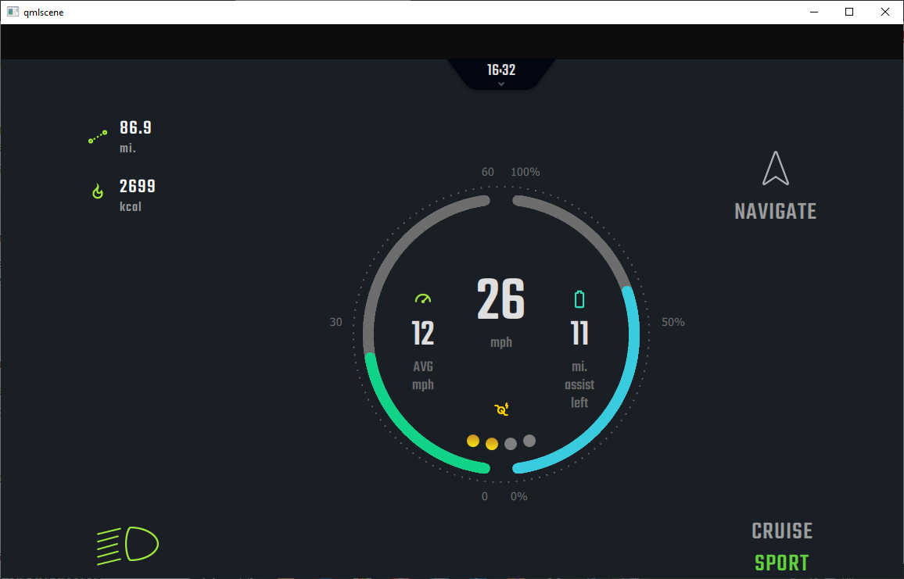
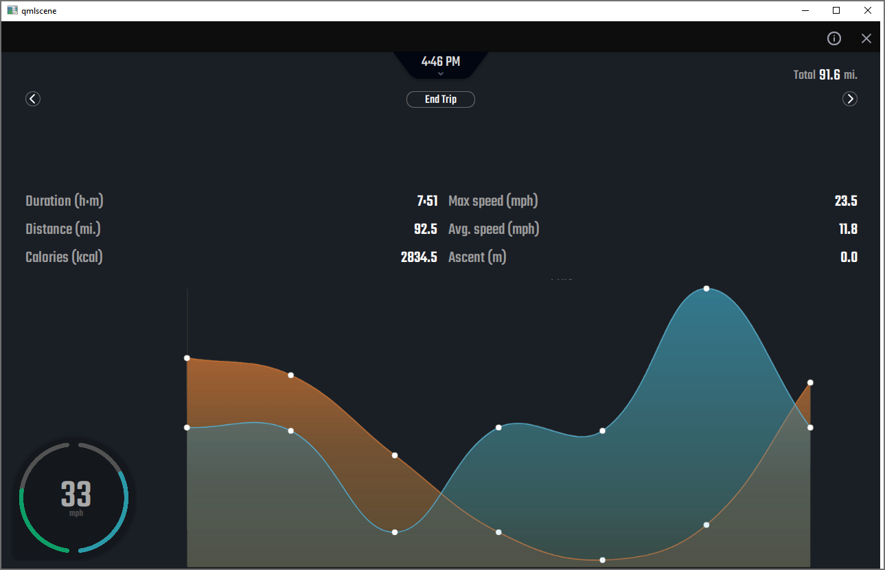
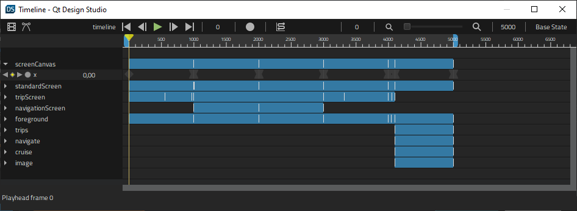
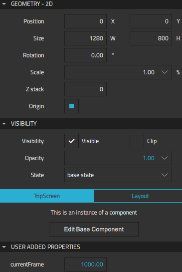
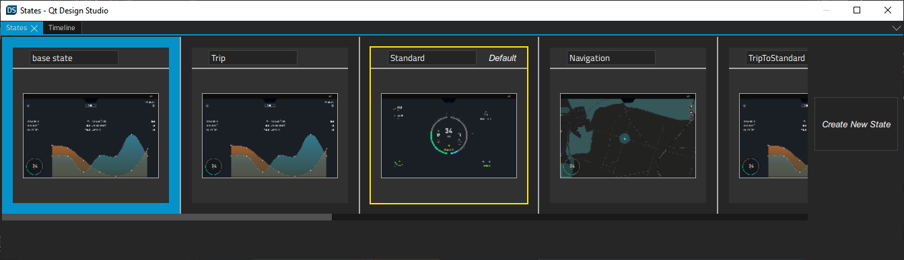
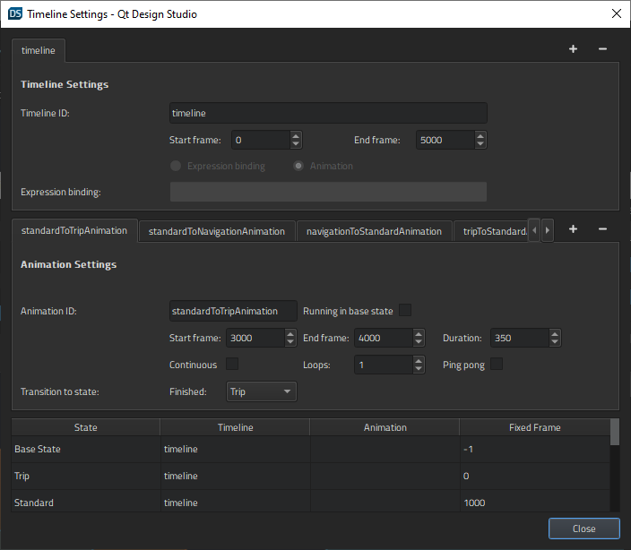

E-Bike Design
Illustrates how to use the timeline and states to animate transitions in an application.

E-Bike Design is a control center application for electric bikes. The application contains a Standard screen that displays a speedometer, a Trip screen that displays statistics about the current trip, and a Navigator screen that displays a map.
The Trip and Navigator screens display a small animated speedometer that the users can select to move back to the Standard screen.

In the Screen01.ui.qml file, we place the screens in a row in the following order from left to right: Trip, Standard, Navigator. We will use states to show the appropriate screen in the viewport, and the timeline to animate the transitions between and on the screens.
Using Timelines to Animate Transitions
We use the Timeline view to animate the transitions between the screens in Screen01.ui.qml.
Our viewport contains 1000 frames, so we select the  "Plus button" button to add a 5000-frame timeline to the root component. We use the default values for all other fields.
"Plus button" button to add a 5000-frame timeline to the root component. We use the default values for all other fields.
To start recording the transitions between the Standard screen and the Trip and Navigator screens on the timeline, we select screenCanvas in the Navigator view. We check that the playhead is at frame 0, and then select the  (Auto Key (K)) button (or press k).
(Auto Key (K)) button (or press k).

At frame 0, we set the X coordinate to 0 in Properties > Geometry - 2D > Position to display the Trip screen. We then move the playhead to frame 1000 and set the X coordinate to -1286 to display the Standard screen. We continue by moving the playhead to frame 2000 and setting the X coordinate to -2560 to display the Navigator screen. At frame 3000, we set the X coordinate back to -1268 to return to the Standard screen. Finally, at frame 4000, we set the X coordinate to -19 to return to the Trip screen.
When we deselect the record button to stop recording the timeline, the new timeline appears in the view.
When we select tripScreen in the Navigator, we can see the properties of the TripScreen component that we can animate in the Properties view.

We set values for the Scale, Visibility, Opacity, and currentFrame properties to fade out the current screen when moving to another one and to make the speedometer grow and shrink in size depending on its current position.
For more information about using the timeline, see Creating Timeline Animations.
Using States to Move Between Screens
We use the States view to determine the contents of the viewport. The animations are run in a particular state or when moving from one state to another.

We create the states for displaying the Trip, Standard, and Navigation screens by moving from viewport to viewport in Screen01.ui.qml and selecting Create New State in the States view when the appropriate screen is displayed in the viewport.
We then create states for animations that are run when moving between the screens: TripToStandard, StandardToNavigation, NavigationToStandard, and StandardToTrip.
Finally, we create states for enlarging and shrinking the speedometer: Big, ToBig, and FromBig.
We then return to the Timeline view and select  "Timeline Settings button" to open the Timeline Settings dialog. We select the Add button to create animations for each part of the timeline. Therefore, the start and end frame of each animation are important, whereas their duration is not.
"Timeline Settings button" to open the Timeline Settings dialog. We select the Add button to create animations for each part of the timeline. Therefore, the start and end frame of each animation are important, whereas their duration is not.

We set the start and end frames for the transitions to states to match the values of the X coordinate we set on the timeline.
In the Transitions to states field, we select the state to switch to when the animation ends. In the lower part of the dialog, we bind the states that don't have animations to fixed frames.